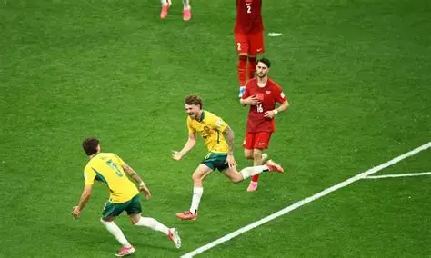
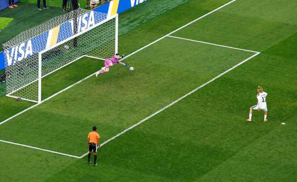

Austrália vence a Turquia pela 1° rodada da Copa do Mundo 2026. Os Australianos se defenderam perfeitamente diante da grande geração turca, com grandes atuações do goleiro Beach e do lateral Bos, e com brilho do atacante Irankunda!

Austrália vence a Turquia pela 1° rodada da Copa do Mundo 2026. Os Australianos se defenderam perfeitamente diante da grande geração turca, com grandes atuações do goleiro Beach e do lateral Bos, e com brilho do atacante Irankunda!

A tetracampeâ Alemanha é eliminada na fase 16 avos de final pelo paraguai nos pênaltis. Em uma grande atuação defensiva dos paraguaios, o jogo que terminou 1x1 no tempo normal, foi decidido pelo goleiro Orlando Gill, que pegou 2 pênaltis e garantiu a classificação paraguaia.

A única pentacampeã do mundo eliminou o japão em um jogo de muitas emoções. Com uma virada histórica e com gols de Casemiro e Martinelli, o Brasil se classifica para as oitavas de final da Copa do Mundo 2026 e aguarda o vencedor de Noruega x Costa do Marfim.